首页 > 编程笔记
知识图谱快速入门教程
2009 年 5 月，NBA 西部半决赛正在进行，刚刚接触篮球不久的阿楠惊叹于火箭队的中国大个儿——姚明的表现，于是尝试搜索姚明的臂展。他打开 Google 搜索引擎，将“姚明臂展”作为关键字进行搜索，得到一整页与姚明相关的网页链接，在尝试打开若干个链接之后，阿楠终于找到一个关于姚明的介绍，里面提到姚明的臂展是 7 英尺 5 英寸。然后，他又搜索尺寸转换标准，计算出姚明的臂展足足有 226.1 厘米。可以看到，在当时，想要通过搜索引擎获取一个问题的答案，可能要经过很多步骤，即便 Google 已经在 2009 年 3 月开始支持更长的查询和初步的语义功能，想要从搜索直接获得答案仍是一件基本不可能的事情。
那么十多年后的今天，如果阿楠想得到同样的答案，会有什么不一样吗？答案是肯定的，如今在 Google 搜索引擎中搜索“姚明”（读者可自行尝试），会在搜索页面的右侧出现一个包含很多信息的方框，里面除了姚明的代表性图片，还有其基本信息，同时也给出了其他用户感兴趣的搜索项。搜索结果中优先给出了姚明的百科信息链接（维基百科和百度百科），还给出了姚明的相关视频及新闻。可谓内容丰富，图文并茂。
甚至，阿楠还可以用一种更简单的方法，通过在 Google 搜索引擎中搜索“姚明的臂展，厘米”直接得到答案。“让搜索通往答案”正是 Google 搜索引擎的目标之一。而这一切都基于 2012 年 Google 发布的知识图谱（Knowledge Graph）。
Google 知识图谱通过从各种来源搜集信息，来增强搜索引擎结果的准确性。同时，这些不同来源的信息会被添加到搜索引擎右侧的信息框（Infobox）中。Google 知识图谱在发布后的几个月内，就已覆盖了超过 5.7 亿个实体（Entity）以及 180 亿条事实（Fact），并回答了在 2016 年 5 月 Google 搜索引擎中接近三分之一的问题（问题搜索总量约为 1000 亿）。
利用 Google 知识图谱，如果用户想要搜索文艺复兴时期的达·芬奇，就会得到如图 1 所示的结果，包括不同的实体以及这些实体是如何连接在一起的。我们不仅可以看到达·芬奇的生卒年月（1452~1519），还可以看到他和他的作品（蒙娜丽莎）、他和他的出生地（意大利）之间的联系。通过发掘这样相互联系的结果，用户可以了解实体更深层次的信息，并进行关联信息的查询。
通过以上的例子，我们可以直观地感受到，知识图谱是一种具有图结构的知识库，其结点通过一些边连接在一起，也可以看到知识图谱在搜索引擎上的强大应用。知识图谱可以看作一类语义网络（Semantic Network）。语义网络是一种表示网络中概念（Concept）之间语义关系的知识库，通常是一个有向或无向图，由表示概念的结点和表示概念之间语义关系的边组成。在图 1 中，达·芬奇是一个结点，而达·芬奇和蒙娜丽莎的关系就是一条边。
可以看到，Google 通过一个强大的知识图谱，提高了用户的搜索体验。实际上，Google 是站在巨人的肩膀上做了一个拓展，这个巨人就是当时世界上最大的知识图谱之一——Freebase 知识库。
Freebase 是一个大型的众包知识库，其数据源自维基百科、NNDB、MusicBrainz 等，同时通过开源免费吸引用户贡献数据，在运行 3 年之后，被 Google 纳入麾下，成为其知识图谱的重要基石。可惜的是，Freebase 官方网站已经在 2016 年 5 月关闭，用户目前仅能通过 Google API 下载其历史数据文件。图 2 是 Freebase 官方网站在关闭之前的截图。
图 2 Freebase官网截图
首先看一下什么是知识。有读者可能会提出这样的问题，在大数据时代，人类拥有海量的数据，这是不是代表人类可以随时随地利用无穷无尽的知识呢？答案是否定的。
知识是人类在实践中认识客观世界（包括人类自身）的成果，它包括事实、信息、描述以及在教育和实践中获得的技能。知识是人类从各个途径中获得的经过提升、总结与凝炼的系统的认识。
因此，可以这样理解，知识是人类对信息进行处理之后的认识和理解，是对数据和信息的凝炼、总结后的成果。
让我们来看一下 Rowley 在 2007 年提出的 DIKW 体系，如图 3 所示，从数据、信息、知识到智慧，是一个不断凝炼的过程。
举一个简单的例子，226.1 厘米，229 厘米，都是客观存在的孤立的数据。此时，数据不具有任何意义，仅表达一个客观事实。而“姚明臂展 226.1 厘米”“姚明身高 229 厘米”是事实型的陈述，属于信息的范畴。
知识，则是对信息层面的抽象和归纳，把姚明的身高、臂展，及其他属性整合起来，就得到了对于姚明的一个认知，也可以进一步了解到姚明的身高是比普通人高的。对于最后的智慧层面，Zeleny 提到的智慧是指知道为什么（Know-Why），感兴趣的读者可以自行了解，这里不再进行深入探讨。
那么什么是图谱？图谱的英文是 Graph，直译过来就是“图”的意思。在图论（数学的一个研究分支）中，图表示一些事物（Object）与另一些事物之间相互连接的结构。一张图通常由一些结点（Vertice或Node）和连接这些结点的边（Edge）组成。“图”这一名词是由詹姆斯·约瑟夫·西尔维斯特在 1878 年首次提出的。
图 4 是一个非常简单的图，它由 6 个结点和 7 条边组成。
从字面上看，知识图谱就是用图的形式将知识表示出来。图中的结点代表语义实体或概念，边代表结点间的各种语义关系。
我们再将姚明的一些基本信息，用计算机所能理解的语言表示出来，构建一个简单的知识图谱。比如，<姚明，国籍，中国> 表示姚明的国籍是中国，其中“姚明”和“中国”是两个结点，而结点间的关系是“国籍”。这是一种常用的基于符号的知识表示方式——资源描述框架（Resource Description Framework，RDF），它把知识表示为一个包含主语（Subject）、谓语（Predicate）和宾语（Object）的三元组 <S,P,O>。
知识图谱概念的演化历程如图 5 所示。
语义网络由剑桥语言研究所的 Richard Richens 提出，前文中已经简单介绍了语义网络的含义。它是一种基于图的数据结构，是一种知识表示的手段，可以很方便地将自然语言转化为图来表示和存储，并应用在自然语言处理问题上，例如机器翻译、问答等。
到了 20 世纪 80 年代，研究人员将哲学概念本体（Ontology）引入计算机领域，作为“概念和关系的形式化描述”，后来，Ontology 被用于为知识图谱定义知识体系（Schema）。
而真正对知识图谱产生深远影响的是 Web 的诞生。Tim Berners-Lee 在 1989 年发表的“Information Management: A Proposal”中提出了 Web 的愿景，Web 应该是一个以“链接”为中心的信息系统（Linked Information System），以图的方式相互关联。Tim 认为“以链接为中心“和“基于图的方式”，相比基于树的固定层次化组织方式更加有用，从而促成了万维网的诞生。
我们可以这样理解，在 Web 中，每一个网页就是一个结点，网页中的超链接就是边。但其局限性是显而易见的，比如，超链接只能说明两个网页是相互关联的，而无法表达更多信息。
1994 年，在第一届国际万维网大会上，Tim 又指出，人们搜索的并不是页面，而是数据或事物本身，由于机器无法有效地从网页中识别语义信息，因此仅仅建立 Web 页面之间的链接是不够的，还应该构建对象、概念、事物或数据之间的链接。
随后在 1998 年，Tim 正式提出语义网（Semantic Web）的概念。语义网是一种数据互连的语义网络，它仍然基于图和链接的组织方式，但图中的结点不再是网页，而是实体。通过为全球信息网上的文档添加“元数据”（Meta Data），让计算机能够轻松理解网页中的语义信息，从而使整个互联网成为一个通用的信息交换媒介。
我们可以将语义网理解为知识的互联网（Web of Knowledge）或者事物的互联网（Web of Thing）。
2006 年，Tim 又提出了链接数据（Linked Data）的概念，进一步强调了数据之间的链接，而不仅仅是文本的数据化。随后在 2012 年，Google 基于语义网中的一些理念进行了商业化实现，其提出的知识图谱概念也沿用至今。
可以看到，知识图谱的概念是和 Web、自然语言处理（NLP）、知识表示（KR）、数据库（DB）、人工智能（AI）等密切相关的。所以我们可以从以下几个角度去了解知识图谱：
由此看来，知识图谱技术是一个系统工程，需要综合利用各方面技术。国内的一些知名学者也给出了关于知识图谱的定义。这里简单列举了几个：
当前，无论是学术界还是工业界，对知识图谱还没有一个唯一的定义，本节的重点也不在于给出理论上的精确定义，而是尝试从工程的角度，讲解如何构建有效的知识图谱。
从 20 世纪 80 年代开始的 CYC 项目，到 Google 2012 年提出的知识图谱，再到现在不同语种、不同领域的知识图谱项目大量涌现，知识图谱已经被深入研究并广泛应用于各个行业。
例如，WordNet 是典型的词典知识库，BabelNet 也是类似于 WordNet 的多语言词典知识库，YAGO 集成了 Wikipedia、WordNet、GeoNames 三个源的数据，NELL 则持续不断从互联网上自动抽取三元组知识。
由于这些项目的相关资料较为丰富，接下来仅挑选若干具有代表性的知识图谱项目加以介绍。
根据维基百科数据，CYC 包含 320 万条人类定义的断言，涉及 30 万个概念和 15000 个谓词。1986 年，Douglas Lenat 推断要构建这样庞大的知识库需设计 25 万条规则，同时需要 350 个人一年才能完成。这个看似疯狂的计划之所以能够推进，和当时的历史背景是不可分开的。
在 CYC 中，大部分工作是以知识工程为基础，且大部分事实都是通过手动添加到知识库上的。CYC 主要由两部分构成，第一部分是作为数据载体的多语境知识库，第二部分是系统本身的推理引擎。比如，通过“每棵树都是植物”和“植物最终都会死亡”的知识，推理引擎可以推断出“树会死亡”的结论。1994 年图灵奖获得者爱德华·费根鲍姆曾称：“CYC是世界上最大的知识库，也是技术论的最佳代表。”
ConceptNet 的一大特点是它的知识描述是非形式化的，更加贴近自然语言的描述。图 7 给出了 ConceptNet 的一个组织架构。这里列举了一些更为具体的描述，例如：“企鹅是一种鸟”“企鹅出现在动物园”“企鹅想要有足够的食物”等。
截至目前，DBpedia 是链接开放数据（LOD）中最大的具有代表性的开放链接数据库之一。
截至 2020 年 7 月，LOD 有 1260 个知识图谱，包含 16187 个链接。
图 8 给出了 LOD 统计的知识图谱的示意图，它按照不同的颜色将知识图谱分为 9 个大类，其中社交媒体、政府、出版和生命科学四个领域的数据占比之和超过 90%。
人类一直在探寻世间真理，尝试建立知识体系。从亚里士多德开始，就有很多人对世间的万事万物进行分类。比如亚里士多德将元素分为土、水、火、空气和以太（构成天体的神圣物质），在中国最早的古汉语辞书《尔雅》中则将世间万物分为了天地山水、草木鸟兽等19个门类，并对每一个门类都进行了详细的讲解。例如在“释兽”中有这样的描述：“狗四尺为獒”。也就是说，獒是狗的一种，而且是身长四尺以上的狗。
上文我们提到，在知识图谱的图结构表示中，结点代表语义实体或概念，边代表结点间的各种语义关系。那么，实体和概念又该如何区分呢？
举一个简单的例子。在三元组<姚明，国籍，中国>中，“姚明”和“中国”是两个实体，而姚明是一个人（Human）或者篮球运动员（Basketball Player），中国是一个地点（Location）或者一个国家（Country）。这里，人、篮球运动员、地点、国家，都可以看作概念。
前文提到，由概念组成的体系称为本体，本体的表达能力比模式强，且包含各种规则（Axiom），而模式这个词汇则来源于数据库领域，可视为一个轻量级的本体。实体和概念之间通常是“是”的关系，也就是“isA”关系，比如“中国是一个国家”。而概念和概念之间通常是子集关系，如“subClassOf”，比如“篮球运动员是人的一个子集”，“国家是地点的一个子集”。
一个简单的由本体所描述的模式如图 9 所示。
总体来看，本体强调了概念之间的相互关系，描述了知识图谱的模式，而知识图谱是在本体的基础上增加了更丰富的实体信息。通俗来讲，模式是骨架，而知识图谱是血肉。有了模式，我们可以更好地推理和联想。例如，树是一种植物，柳树是树的一种实例化，则可以推断出“柳树是植物”。
接下来我们谈一下由 Google、Microsoft 和 Yahoo !三大巨头于 2011 年推出的模式规范体系：Schema.org。这个规范体系是一个消费驱动的尝试，其指导数据发布者和网站构建者在网页中嵌入并发布结构化数据，当用户使用特定关键字搜索时，可以免费为这些网页提升排名，从而起到搜索引擎优化（SEO）的作用。
Schema.org 支持各个网站采用语义标签（Semantic Markup）的方式将语义化的链接数据嵌入网页中。它的核心模式由专家自顶向下定义，截至目前，这个词汇本体已经包含 700 多个类和1300多种属性，覆盖范围包括个人、组织机构、地点、时间、医疗、商品等。通过 SEO 的明确价值导向，Schema.org 得到了广泛应用，目前全互联网有超过30%的网页增加了基于它的数据体系的数据标注。
举一个简单的例子，对于一个电影门户网站的站长来说，如果现在一位用户正在搜索电影《八佰》，该站长希望能够通过 SEO 提升自己网站的排名，从而让用户更加倾向点进站内的相关电影界面。传统的 HTML 标签只会告诉浏览器如何渲染网页上的信息，例如 <h1>The Eight Hundred</h1>仅仅告诉浏览器以大标题形式显示文本文字“The Eight Hundred”，没有明确给出这些文本文字的信息。而 Schema.org 可以理解为一份共享词汇表，一种语义化的网页结构标记。
对于搜索引擎而言，使用 Schema.org 规范，可以让搜索更准确，生成丰富的网页摘要。采用 Schema.org 规范的网页标签示例如下：
在工业实践中，开发人员一般会根据一个成熟的知识体系，结合特定需求，构建适合自身需求的模式。例如，狗尾草智能科技有限公司推出的百科知识图谱“七律”及其相应的模式，就是基于 AI 虚拟生命开发的知识体系，如图 10 所示。
随着硬软件的发展，自 2012 年以来，深度学习在各领域，尤其是感知层面，都掀起了技术革命。
在计算机视觉领域，微软在 2015 年提出的深度学习算法，已经在 ImageNet2012 分类数据集中将错误率降低到 4.94%，首次低于人眼识别的错误率（约 5.1%）。在语音合成技术领域，DeepMind 公司在 2017 年 6 月发布了最新的 WaveNet 语音合成系统，是当时世界上文本到语音环节最好的生成模型。在语音识别领域，通过引入深度学习，大大提到了语音识别的准确性。2017 年 8 月，微软语音识别系统错误率由之前的 5.9%进一步降低到 5.1%，大幅刷新原先记录，可与专业速记员比肩。
而在预训练语言模型方面，OpenAI 的语言模型 GPT-2 在多项任务上均超越了 BERT，成为当时新的标杆。2020 年，GPT-3 横空出世，其参数比 GPT-2 多 100 倍。该模型经过了将近 0.5 万亿个单词的预训练，可以在不进行微调的情况下，在多个 NLP 基准上达到最优质的性能。
在应用领域，有很多人们所熟知的具有代表性的案例：
甚至在人类最后的堡垒艺术方面，人工智能也取得了令人瞩目的突破。2018 年 10 月，一幅名为《爱德蒙·贝拉米的肖像》的画作拍出了 43.25 万美金的高价，远超 7000 到 1 万美元的预期。而这幅画作，是用了 1.5 万张图片，结合生成对抗模型得到的结果。
人工智能在感知层面的应用突飞猛进，伴随着深度学习的发展，在各个领域都取得了超越人类的成绩。但迄今为止，这些突破都是基于海量的训练数据，通过强大的计算能力得到的。
例如，基于 Transformer 的 GPT-2，拥有 15 亿参数和40GB网络数据的测试集，在算法发布时的训练价格是每小时 2048 美元，使用了 256 块 Google TPU v3。GPT3 的参数量更是达到了惊人的 1750亿，并使用了 45GB 的数据进行训练。
众所周知，人工智能一共有三个代表性学派，如图 11 所示。其中，符号学派强调模拟人的心智，连接学派强调模拟脑的结构，行为学派强调模拟人的行为。
以深度学习为代表的连接学派，主要解决了感知问题，也引领了这一轮人工智能的发展热潮。但是在更高层次的认知领域，例如自然语言理解、推理和联想等方面，还需要符号学派的帮助。
知识图谱是符号学派的代表，可以帮助我们构建更有学识的人工智能，从而提升机器人推理、理解、联想等功能。而这一点，仅通过大数据和深度学习是无法做到的。多伦多大学的 Geoffrey Hinton 教授也提出，人工智能未来的发展方向之一就是深度神经网络与符号人工智能的深入结合。
近两年，市场上出现了大量聊天机器人产品，提供各种各样的功能，比如情感陪伴、个人助理、儿童教育、生活购物等。但从实际的效果来看，绝大部分产品只能完成简单的问答和对话，远未达到媒体上宣传的效果，更不要说进行真正的思考和推理，就好像是绿野仙踪里的铁皮人，缺少了具有“生命感”的那颗心。
同时，在对常识的理解上，人工智能系统的理解能力还非常稚嫩，对于人类而言非常容易的问题，如“鸡蛋放到篮子里，是鸡蛋大还是篮子大”以及“啤酒杯掉到地毯上会不会碎”等问题，则很难判断。究其原因，大数据并不等于知识，人类在长期生活实践中所积累的经验和知识，也无法快速传递给人工智能系统。
综上所述，知识图谱是实现通用人工智能（Artificial General Intelligence，AGI）的重要基石。在从感知到认知的跨越过程中，构建大规模高质量知识图谱是一个重要环节。当人工智能可以通过更结构化的表示理解人类知识，并进行互联时，才有可能让机器真正实现推理、联想等认知功能。不过，对于AI拥有了全部人类知识后是否能够形成独立思考的能力，则需要专家学者进一步研究。
在医疗领域，为了降低发现新药的难度，Open Phacts 联盟构建了一个发现平台，通过整合来自各种数据源的药理学数据，构建知识图谱，来支持药理学研究和药物发现。
IBM Waston 通过构建医疗信息系统，以及一整套的问答和搜索框架，以肿瘤诊断为核心，成功应用于包括慢病、医疗影像、体外检测在内的九大医疗领域。其第一步商业化运作是打造了一个肿瘤解决方案（Waston for Oncology），通过输入纪念斯隆·凯特琳癌症中心的数千份病例、1500 万页医学文献，可以为不同的肿瘤病人提供个性化治疗方案，连同医学证据一起推荐给医生。
在投资研究领域，成立于 2010 年的 AlphaSense 公司打造了一款新的金融知识引擎。与传统的金融信息数据平台不同，这款知识引擎并不仅仅局限在金融数据的整合和信息平台的范围，而是通过构建知识图谱，加上自然语言处理和语义搜索引擎，让用户可以更方便地获取各种素材并加工再使用。另外一款非常具有代表性的金融知识引擎是 Kensho。它通过从各种数据源搜集信息，构建金融知识图谱，并关注事件和事件之间的依赖，以及对结果的关联和推理，从而可为用户提供自动化语义分析、根据特定行情判断走势等功能。
在政府管理和安全领域，一个具有代表性的案例是 Palantir，因通过大规模知识图谱协助抓住了本·拉登而声名大噪。其核心技术是整理、分析不同来源的结构化和非结构化数据，为相关人员提供决策支持。例如在军事情报分析系统中，将多源异构信息进行整合，如电子表格、电话、文档、传感器数据、动态视频等，可以对人员、装备、事件进行全方位实时的监控分析，使调度人员第一时间掌握战场态势，并做出预判。除了协助抓住本·拉登，Palantir 的另外一项赫赫有名的成就是协助追回了前纳斯达克主席麦道夫金融欺诈案的数十亿美金。
在电商领域，阿里巴巴生态积聚了海量的商品和交易数据，它以商品、产品、品牌和条码为核心，构建了百亿级别的商品知识图谱，可以广泛应用于搜索、导购、平台治理、智能问答等业务，同时保持每天千万级别的恶意攻击拦截量，极大提升了消费者的购物体验。
在聊天机器人领域，具有问答功能的产品，例如Siri、微软小冰、公子小白、琥珀·虚颜、天猫精灵、小米音箱，背后均有大规模知识图谱的支持。例如在琥珀·虚颜中，除了有通用百科知识图谱——“七律”的支持，还有子领域，例如动漫知识图谱、美食知识图谱、星座知识图谱的支持。图 12 给出了公子小白在多类别知识图谱融合后的一个问答对话示例。
知识图谱的构建与计算，不仅需要考虑如何结合文本、多媒体、半结构化、结构化知识、服务或 API，以及时态知识等的统一知识表示，还需要进一步考虑如何结合结构化（如关系型数据库）、半结构化（HTML或XML）和非结构化（文本、图像等）多源异质数据源来分别构建通用事实类（各种领域相关实体知识）、常识类、用户个人记忆类和服务任务类知识库等。
针对不同类型的数据和知识，有不同的构建技术，如针对结构化数据的知识映射、针对半结构化知识的包装器（Wrapper），以及针对非结构化知识的文本挖掘和自然语言处理。文本挖掘充分利用 Web 和大规模语料库的冗余信息来发现隐含的模式；而自然语言处理更多是在开放或者确定的 Schema 下做各种知识抽取。
为了得到融合的图谱，我们除了需要考虑离线的多源异构的知识融合，还需要额外考虑服务任务类动态知识的对象绑定。这项工作往往是在线完成的，相当于根据不同的交互，在线动态扩充知识图谱并实例化的过程。
最后还需要考虑知识图谱的存储。既然有了知识，就必须用一定的手段去存储。但这里谈到的存储，不仅仅是建立一个知识库，还包括存储之后的应用效率等。
传统型关系数据库，例如 MySQL，以及一些 NoSQL 数据库，例如 MongoDB，能不能存储 KG 呢？答案是肯定的，但从直观上说，考虑到知识是互联、庞大的，且联系是数据的本质所在，而传统型数据库对于数据联系的表现比较差，所以在知识图谱的存储上，关系型数据库没有图数据库灵活。尤其是涉及多跳关联查询时（例如姚明的妻子的国籍是什么），图数据库的效率会远比关系型数据库高。
那么十多年后的今天，如果阿楠想得到同样的答案，会有什么不一样吗？答案是肯定的，如今在 Google 搜索引擎中搜索“姚明”（读者可自行尝试），会在搜索页面的右侧出现一个包含很多信息的方框，里面除了姚明的代表性图片，还有其基本信息，同时也给出了其他用户感兴趣的搜索项。搜索结果中优先给出了姚明的百科信息链接（维基百科和百度百科），还给出了姚明的相关视频及新闻。可谓内容丰富，图文并茂。
甚至，阿楠还可以用一种更简单的方法，通过在 Google 搜索引擎中搜索“姚明的臂展，厘米”直接得到答案。“让搜索通往答案”正是 Google 搜索引擎的目标之一。而这一切都基于 2012 年 Google 发布的知识图谱（Knowledge Graph）。
Google 知识图谱通过从各种来源搜集信息，来增强搜索引擎结果的准确性。同时，这些不同来源的信息会被添加到搜索引擎右侧的信息框（Infobox）中。Google 知识图谱在发布后的几个月内，就已覆盖了超过 5.7 亿个实体（Entity）以及 180 亿条事实（Fact），并回答了在 2016 年 5 月 Google 搜索引擎中接近三分之一的问题（问题搜索总量约为 1000 亿）。
利用 Google 知识图谱，如果用户想要搜索文艺复兴时期的达·芬奇，就会得到如图 1 所示的结果，包括不同的实体以及这些实体是如何连接在一起的。我们不仅可以看到达·芬奇的生卒年月（1452~1519），还可以看到他和他的作品（蒙娜丽莎）、他和他的出生地（意大利）之间的联系。通过发掘这样相互联系的结果，用户可以了解实体更深层次的信息，并进行关联信息的查询。
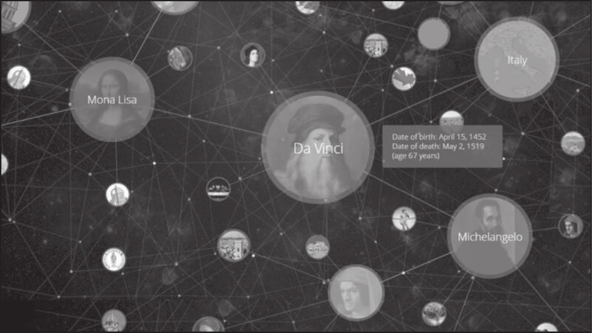
图 1 Google知识图谱中“达·芬奇”的可视化搜索结果
图 1 Google知识图谱中“达·芬奇”的可视化搜索结果
通过以上的例子，我们可以直观地感受到，知识图谱是一种具有图结构的知识库，其结点通过一些边连接在一起，也可以看到知识图谱在搜索引擎上的强大应用。知识图谱可以看作一类语义网络（Semantic Network）。语义网络是一种表示网络中概念（Concept）之间语义关系的知识库，通常是一个有向或无向图，由表示概念的结点和表示概念之间语义关系的边组成。在图 1 中，达·芬奇是一个结点，而达·芬奇和蒙娜丽莎的关系就是一条边。
可以看到，Google 通过一个强大的知识图谱，提高了用户的搜索体验。实际上，Google 是站在巨人的肩膀上做了一个拓展，这个巨人就是当时世界上最大的知识图谱之一——Freebase 知识库。
Freebase 是一个大型的众包知识库，其数据源自维基百科、NNDB、MusicBrainz 等，同时通过开源免费吸引用户贡献数据，在运行 3 年之后，被 Google 纳入麾下，成为其知识图谱的重要基石。可惜的是，Freebase 官方网站已经在 2016 年 5 月关闭，用户目前仅能通过 Google API 下载其历史数据文件。图 2 是 Freebase 官方网站在关闭之前的截图。
图 2 Freebase官网截图
知识图谱基本概念
结合上文的例子，相信读者对基于知识图谱的搜索有了一定的了解，接下来将详细阐述知识图谱的基本概念，包括知识图谱的背景、定义以及典型示例。知识图谱背景
在给出知识图谱的定义之前，我们先分开讨论一下什么是知识，什么是图谱。首先看一下什么是知识。有读者可能会提出这样的问题，在大数据时代，人类拥有海量的数据，这是不是代表人类可以随时随地利用无穷无尽的知识呢？答案是否定的。
知识是人类在实践中认识客观世界（包括人类自身）的成果，它包括事实、信息、描述以及在教育和实践中获得的技能。知识是人类从各个途径中获得的经过提升、总结与凝炼的系统的认识。
因此，可以这样理解，知识是人类对信息进行处理之后的认识和理解，是对数据和信息的凝炼、总结后的成果。
让我们来看一下 Rowley 在 2007 年提出的 DIKW 体系，如图 3 所示，从数据、信息、知识到智慧，是一个不断凝炼的过程。
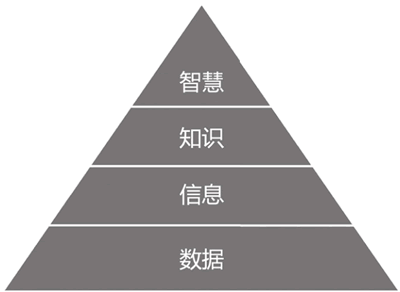
图 3 DIKW体系
图 3 DIKW体系
举一个简单的例子，226.1 厘米，229 厘米，都是客观存在的孤立的数据。此时，数据不具有任何意义，仅表达一个客观事实。而“姚明臂展 226.1 厘米”“姚明身高 229 厘米”是事实型的陈述，属于信息的范畴。
知识，则是对信息层面的抽象和归纳，把姚明的身高、臂展，及其他属性整合起来，就得到了对于姚明的一个认知，也可以进一步了解到姚明的身高是比普通人高的。对于最后的智慧层面，Zeleny 提到的智慧是指知道为什么（Know-Why），感兴趣的读者可以自行了解，这里不再进行深入探讨。
那么什么是图谱？图谱的英文是 Graph，直译过来就是“图”的意思。在图论（数学的一个研究分支）中，图表示一些事物（Object）与另一些事物之间相互连接的结构。一张图通常由一些结点（Vertice或Node）和连接这些结点的边（Edge）组成。“图”这一名词是由詹姆斯·约瑟夫·西尔维斯特在 1878 年首次提出的。
图 4 是一个非常简单的图，它由 6 个结点和 7 条边组成。
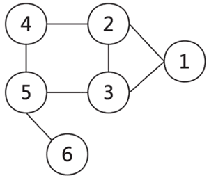
图 4 由6个结点和7条边组成的图示例
图 4 由6个结点和7条边组成的图示例
从字面上看，知识图谱就是用图的形式将知识表示出来。图中的结点代表语义实体或概念，边代表结点间的各种语义关系。
我们再将姚明的一些基本信息，用计算机所能理解的语言表示出来，构建一个简单的知识图谱。比如，<姚明，国籍，中国> 表示姚明的国籍是中国，其中“姚明”和“中国”是两个结点，而结点间的关系是“国籍”。这是一种常用的基于符号的知识表示方式——资源描述框架（Resource Description Framework，RDF），它把知识表示为一个包含主语（Subject）、谓语（Predicate）和宾语（Object）的三元组 <S,P,O>。
知识图谱的定义
前面对知识图谱给出了一个具象的描述，即它是由结点和边组成的语义网络。那么该如何准确定义知识图谱呢？这里我们可以先回顾一下其概念的演化历程。知识图谱概念的演化历程如图 5 所示。
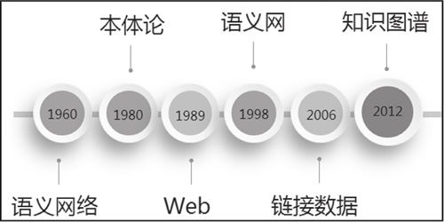
图 5 知识图谱概念的演化历程
图 5 知识图谱概念的演化历程
语义网络由剑桥语言研究所的 Richard Richens 提出，前文中已经简单介绍了语义网络的含义。它是一种基于图的数据结构，是一种知识表示的手段，可以很方便地将自然语言转化为图来表示和存储，并应用在自然语言处理问题上，例如机器翻译、问答等。
到了 20 世纪 80 年代，研究人员将哲学概念本体（Ontology）引入计算机领域，作为“概念和关系的形式化描述”，后来，Ontology 被用于为知识图谱定义知识体系（Schema）。
而真正对知识图谱产生深远影响的是 Web 的诞生。Tim Berners-Lee 在 1989 年发表的“Information Management: A Proposal”中提出了 Web 的愿景，Web 应该是一个以“链接”为中心的信息系统（Linked Information System），以图的方式相互关联。Tim 认为“以链接为中心“和“基于图的方式”，相比基于树的固定层次化组织方式更加有用，从而促成了万维网的诞生。
我们可以这样理解，在 Web 中，每一个网页就是一个结点，网页中的超链接就是边。但其局限性是显而易见的，比如，超链接只能说明两个网页是相互关联的，而无法表达更多信息。
1994 年，在第一届国际万维网大会上，Tim 又指出，人们搜索的并不是页面，而是数据或事物本身，由于机器无法有效地从网页中识别语义信息，因此仅仅建立 Web 页面之间的链接是不够的，还应该构建对象、概念、事物或数据之间的链接。
随后在 1998 年，Tim 正式提出语义网（Semantic Web）的概念。语义网是一种数据互连的语义网络，它仍然基于图和链接的组织方式，但图中的结点不再是网页，而是实体。通过为全球信息网上的文档添加“元数据”（Meta Data），让计算机能够轻松理解网页中的语义信息，从而使整个互联网成为一个通用的信息交换媒介。
我们可以将语义网理解为知识的互联网（Web of Knowledge）或者事物的互联网（Web of Thing）。
2006 年，Tim 又提出了链接数据（Linked Data）的概念，进一步强调了数据之间的链接，而不仅仅是文本的数据化。随后在 2012 年，Google 基于语义网中的一些理念进行了商业化实现，其提出的知识图谱概念也沿用至今。
可以看到，知识图谱的概念是和 Web、自然语言处理（NLP）、知识表示（KR）、数据库（DB）、人工智能（AI）等密切相关的。所以我们可以从以下几个角度去了解知识图谱：
- 从 Web 的角度来看，像建立文本之间的超链接一样，构建知识图谱需要建立数据之间的语义链接，并支持语义搜索，这样就改变了以前的信息检索方式，可以以更适合人类理解的语言来进行检索，并以图形化的形式呈现。
- 从 NLP 的角度来看，构建知识图谱需要了解如何从非结构化的文本中抽取语义和结构化数据。
- 从 KR 的角度来看，构建知识图谱需要了解如何利用计算机符号来表示和处理知识。
- 从 AI 的角度来看，构建知识图谱需要了解如何利用知识库来辅助理解人类语言，包括机器翻译问题的解决。
- 从 DB 的角度来看，构建知识图谱需要了解使用何种方式来存储知识。
由此看来，知识图谱技术是一个系统工程，需要综合利用各方面技术。国内的一些知名学者也给出了关于知识图谱的定义。这里简单列举了几个：
- 电子科技大学的刘峤教授给出的定义是：知识图谱，是结构化的语义知识库，用于以符号形式描述物理世界中的概念及其相互关系，其基本组成单位是“实体–关系–实体”三元组，以及实体及其相关属性–值对，实体之间通过关系相互联结，构成网状的知识结构。
- 清华大学的李涓子教授给出的定义是：知识图谱以结构化的方式描述客观世界中概念、实体及其关系，将互联网的信息表示成更接近人类认知世界的形式，提供了一种更好地组织、管理和理解互联网海量信息的能力。
- 浙江大学的陈华钧教授对知识图谱的理解是：知识图谱旨在建模、识别、发现和推断事物、概念之间的复杂关系，是事物关系的可计算模型，已经被广泛应用于搜索引擎、智能问答、语言理解、视觉场景理解、决策分析等领域。
- 东南大学的漆桂林教授给出的定义是：知识图谱本质上是一种叫作语义网络的知识库，即一个具有有向图结构的知识库，其中图的结点代表实体或者概念，而图的边代表实体/概念之间的各种语义关系。
当前，无论是学术界还是工业界，对知识图谱还没有一个唯一的定义，本节的重点也不在于给出理论上的精确定义，而是尝试从工程的角度，讲解如何构建有效的知识图谱。
典型知识图谱示例
这里将列举几个典型的知识图谱项目。图 6 给出了具有代表性的知识图谱项目的发展历史。
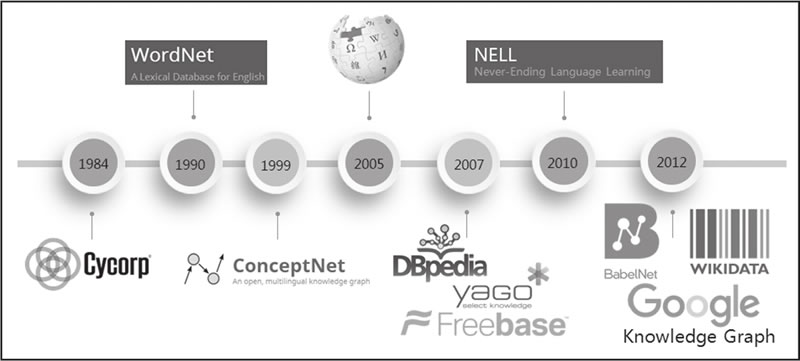
图 6 知识图谱发展历史
图 6 知识图谱发展历史
从 20 世纪 80 年代开始的 CYC 项目，到 Google 2012 年提出的知识图谱，再到现在不同语种、不同领域的知识图谱项目大量涌现，知识图谱已经被深入研究并广泛应用于各个行业。
例如，WordNet 是典型的词典知识库，BabelNet 也是类似于 WordNet 的多语言词典知识库，YAGO 集成了 Wikipedia、WordNet、GeoNames 三个源的数据，NELL 则持续不断从互联网上自动抽取三元组知识。
由于这些项目的相关资料较为丰富，接下来仅挑选若干具有代表性的知识图谱项目加以介绍。
1) CYC
CYC 项目开始于 1984 年，最初目标是建立人类最大的常识知识库，将上百万条知识编码成机器可用的形式。根据维基百科数据，CYC 包含 320 万条人类定义的断言，涉及 30 万个概念和 15000 个谓词。1986 年，Douglas Lenat 推断要构建这样庞大的知识库需设计 25 万条规则，同时需要 350 个人一年才能完成。这个看似疯狂的计划之所以能够推进，和当时的历史背景是不可分开的。
在 CYC 中，大部分工作是以知识工程为基础，且大部分事实都是通过手动添加到知识库上的。CYC 主要由两部分构成，第一部分是作为数据载体的多语境知识库，第二部分是系统本身的推理引擎。比如，通过“每棵树都是植物”和“植物最终都会死亡”的知识，推理引擎可以推断出“树会死亡”的结论。1994 年图灵奖获得者爱德华·费根鲍姆曾称：“CYC是世界上最大的知识库，也是技术论的最佳代表。”
2) ConceptNet
ConceptNet 是一个利用众包构建的常识知识图谱，起源于麻省理工大学媒体实验室的 Open Mind Common Sense（OMCS）项目，它免费开放并且具有多语言版本。其英文版本自 1999 年发布以来，由 15000 个贡献者积累了超过 100 多万个事实。ConceptNet 的一大特点是它的知识描述是非形式化的，更加贴近自然语言的描述。图 7 给出了 ConceptNet 的一个组织架构。这里列举了一些更为具体的描述，例如：“企鹅是一种鸟”“企鹅出现在动物园”“企鹅想要有足够的食物”等。
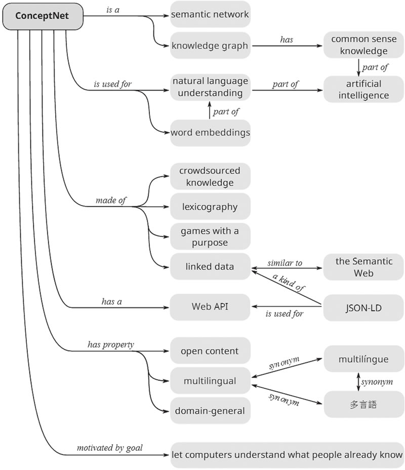
图 7 ConceptNet的组织架构示例
图 7 ConceptNet的组织架构示例
3) DBpedia
DBpedia 是指数据库版本的 Wikipedia，是从 Wikipedia 中的信息框抽取出的链接数据库。英文版本的 DBpedia 包含 600 万实体，其中 510 万个实体可以链接到本体上。并且，DBpedia 还和 Freebase、OpenCYC、Bio2RDF 等多个数据集建立了数据链接。截至目前，DBpedia 是链接开放数据（LOD）中最大的具有代表性的开放链接数据库之一。
4) LOD
上文提到，LOD 的初衷是实现 Tim 有关链接数据作为语义网的一种实现的设想。其遵循四个原则：- 使用 URI 进行标识；
- 使用 HTTP URI，以便用户可以像访问网页一样查看事物的描述；
- 使用 RDF 和 SPARQL 标准；
- 为事物添加与其他事物的 URI 链接，建立数据关联。
截至 2020 年 7 月，LOD 有 1260 个知识图谱，包含 16187 个链接。
图 8 给出了 LOD 统计的知识图谱的示意图，它按照不同的颜色将知识图谱分为 9 个大类，其中社交媒体、政府、出版和生命科学四个领域的数据占比之和超过 90%。
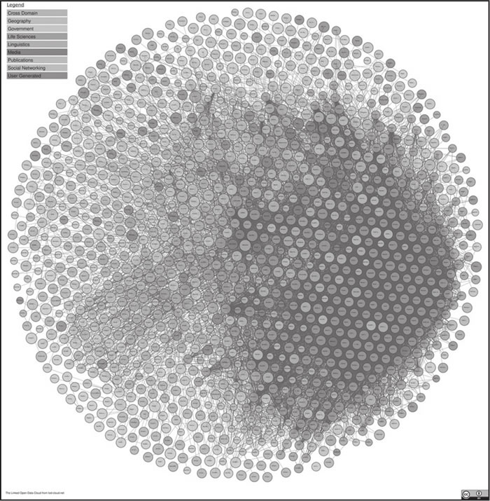
图 8 L0D 知识图谱概览
图 8 L0D 知识图谱概览
知识图谱的模式
前文一直在实际数据的层面谈论知识图谱，也谈到了本体被用于为知识图谱定义模式。作为知识图谱中的重要概念，接下来深入讨论知识图谱的知识体系——模式的含义和构建。人类一直在探寻世间真理，尝试建立知识体系。从亚里士多德开始，就有很多人对世间的万事万物进行分类。比如亚里士多德将元素分为土、水、火、空气和以太（构成天体的神圣物质），在中国最早的古汉语辞书《尔雅》中则将世间万物分为了天地山水、草木鸟兽等19个门类，并对每一个门类都进行了详细的讲解。例如在“释兽”中有这样的描述：“狗四尺为獒”。也就是说，獒是狗的一种，而且是身长四尺以上的狗。
上文我们提到，在知识图谱的图结构表示中，结点代表语义实体或概念，边代表结点间的各种语义关系。那么，实体和概念又该如何区分呢？
举一个简单的例子。在三元组<姚明，国籍，中国>中，“姚明”和“中国”是两个实体，而姚明是一个人（Human）或者篮球运动员（Basketball Player），中国是一个地点（Location）或者一个国家（Country）。这里，人、篮球运动员、地点、国家，都可以看作概念。
前文提到，由概念组成的体系称为本体，本体的表达能力比模式强，且包含各种规则（Axiom），而模式这个词汇则来源于数据库领域，可视为一个轻量级的本体。实体和概念之间通常是“是”的关系，也就是“isA”关系，比如“中国是一个国家”。而概念和概念之间通常是子集关系，如“subClassOf”，比如“篮球运动员是人的一个子集”，“国家是地点的一个子集”。
一个简单的由本体所描述的模式如图 9 所示。
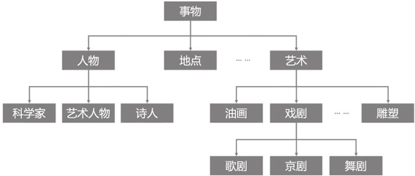
图 9 模式示例
图 9 模式示例
总体来看，本体强调了概念之间的相互关系，描述了知识图谱的模式，而知识图谱是在本体的基础上增加了更丰富的实体信息。通俗来讲，模式是骨架，而知识图谱是血肉。有了模式，我们可以更好地推理和联想。例如，树是一种植物，柳树是树的一种实例化，则可以推断出“柳树是植物”。
接下来我们谈一下由 Google、Microsoft 和 Yahoo !三大巨头于 2011 年推出的模式规范体系：Schema.org。这个规范体系是一个消费驱动的尝试，其指导数据发布者和网站构建者在网页中嵌入并发布结构化数据，当用户使用特定关键字搜索时，可以免费为这些网页提升排名，从而起到搜索引擎优化（SEO）的作用。
Schema.org 支持各个网站采用语义标签（Semantic Markup）的方式将语义化的链接数据嵌入网页中。它的核心模式由专家自顶向下定义，截至目前，这个词汇本体已经包含 700 多个类和1300多种属性，覆盖范围包括个人、组织机构、地点、时间、医疗、商品等。通过 SEO 的明确价值导向，Schema.org 得到了广泛应用，目前全互联网有超过30%的网页增加了基于它的数据体系的数据标注。
举一个简单的例子，对于一个电影门户网站的站长来说，如果现在一位用户正在搜索电影《八佰》，该站长希望能够通过 SEO 提升自己网站的排名，从而让用户更加倾向点进站内的相关电影界面。传统的 HTML 标签只会告诉浏览器如何渲染网页上的信息，例如 <h1>The Eight Hundred</h1>仅仅告诉浏览器以大标题形式显示文本文字“The Eight Hundred”，没有明确给出这些文本文字的信息。而 Schema.org 可以理解为一份共享词汇表，一种语义化的网页结构标记。
对于搜索引擎而言，使用 Schema.org 规范，可以让搜索更准确，生成丰富的网页摘要。采用 Schema.org 规范的网页标签示例如下：
<div itemscope itemtype="http://schema.org/Movie"> <h1 itemprop="name">The Eight Hundred</h1> <div itemprop="director" itemscope itemtype="http://schema.org/Person"> Director: <span itemprop="name">Hu Guan</span> (born <time itemprop="birthDate" datetime="1968-08-01">August 01, 1968</time>) </div> <span itemprop="genre">War</span> <a href=" .../trailer/the-eight-hundred-trailer.html"itemprop="trailer"> Trailer</a> </div>无论是程序员、搜索引擎还是网络爬虫，都可以很轻松地通过 Schema.org 获取到结构非常清晰的信息：
类型：电影（Movie）
名称：八佰（The Eight Hundred）
导演姓名：管虎（Hu Guan）
导演生日：1968年08月01日
影片类型：战争片（War）
在工业实践中，开发人员一般会根据一个成熟的知识体系，结合特定需求，构建适合自身需求的模式。例如，狗尾草智能科技有限公司推出的百科知识图谱“七律”及其相应的模式，就是基于 AI 虚拟生命开发的知识体系，如图 10 所示。
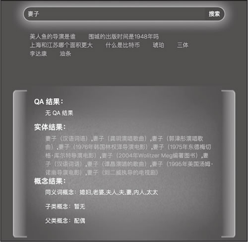
图 10 狗尾草知识图谱-七律示例
图 10 狗尾草知识图谱-七律示例
为什么需要知识图谱
和传统数据库相比，知识图谱有哪些独特优势？要回答这个问题，我们先来聊一聊人工智能目前的发展情况。随着硬软件的发展，自 2012 年以来，深度学习在各领域，尤其是感知层面，都掀起了技术革命。
在计算机视觉领域，微软在 2015 年提出的深度学习算法，已经在 ImageNet2012 分类数据集中将错误率降低到 4.94%，首次低于人眼识别的错误率（约 5.1%）。在语音合成技术领域，DeepMind 公司在 2017 年 6 月发布了最新的 WaveNet 语音合成系统，是当时世界上文本到语音环节最好的生成模型。在语音识别领域，通过引入深度学习，大大提到了语音识别的准确性。2017 年 8 月，微软语音识别系统错误率由之前的 5.9%进一步降低到 5.1%，大幅刷新原先记录，可与专业速记员比肩。
而在预训练语言模型方面，OpenAI 的语言模型 GPT-2 在多项任务上均超越了 BERT，成为当时新的标杆。2020 年，GPT-3 横空出世，其参数比 GPT-2 多 100 倍。该模型经过了将近 0.5 万亿个单词的预训练，可以在不进行微调的情况下，在多个 NLP 基准上达到最优质的性能。
在应用领域，有很多人们所熟知的具有代表性的案例：
- 2011 年，IBM Waston 在综艺节目《危险边缘》（Jeopardy!）中击败了人类最优秀的选手；
- 在 2016 年，Google 的 AlphaGo 打败了人类最顶尖的围棋选手李世石；
- 在星际争霸2中，Google 的 AlphaStar 打败了人类的专业选手，而在 Dota2 比赛与人类的对战中，OpenAI 也取得了不俗的战绩。
- IBM 的 Project Debater，在与人类的辩论赛中也开始崭露头角。
甚至在人类最后的堡垒艺术方面，人工智能也取得了令人瞩目的突破。2018 年 10 月，一幅名为《爱德蒙·贝拉米的肖像》的画作拍出了 43.25 万美金的高价，远超 7000 到 1 万美元的预期。而这幅画作，是用了 1.5 万张图片，结合生成对抗模型得到的结果。
人工智能在感知层面的应用突飞猛进，伴随着深度学习的发展，在各个领域都取得了超越人类的成绩。但迄今为止，这些突破都是基于海量的训练数据，通过强大的计算能力得到的。
例如，基于 Transformer 的 GPT-2，拥有 15 亿参数和40GB网络数据的测试集，在算法发布时的训练价格是每小时 2048 美元，使用了 256 块 Google TPU v3。GPT3 的参数量更是达到了惊人的 1750亿，并使用了 45GB 的数据进行训练。
众所周知，人工智能一共有三个代表性学派，如图 11 所示。其中，符号学派强调模拟人的心智，连接学派强调模拟脑的结构，行为学派强调模拟人的行为。
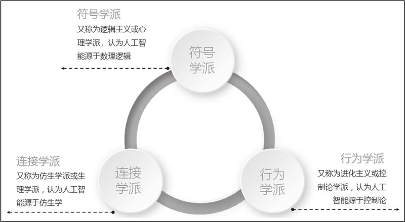
图 11 人工智能代表性的三个学派
图 11 人工智能代表性的三个学派
以深度学习为代表的连接学派，主要解决了感知问题，也引领了这一轮人工智能的发展热潮。但是在更高层次的认知领域，例如自然语言理解、推理和联想等方面，还需要符号学派的帮助。
知识图谱是符号学派的代表，可以帮助我们构建更有学识的人工智能，从而提升机器人推理、理解、联想等功能。而这一点，仅通过大数据和深度学习是无法做到的。多伦多大学的 Geoffrey Hinton 教授也提出，人工智能未来的发展方向之一就是深度神经网络与符号人工智能的深入结合。
近两年，市场上出现了大量聊天机器人产品，提供各种各样的功能，比如情感陪伴、个人助理、儿童教育、生活购物等。但从实际的效果来看，绝大部分产品只能完成简单的问答和对话，远未达到媒体上宣传的效果，更不要说进行真正的思考和推理，就好像是绿野仙踪里的铁皮人，缺少了具有“生命感”的那颗心。
同时，在对常识的理解上，人工智能系统的理解能力还非常稚嫩，对于人类而言非常容易的问题，如“鸡蛋放到篮子里，是鸡蛋大还是篮子大”以及“啤酒杯掉到地毯上会不会碎”等问题，则很难判断。究其原因，大数据并不等于知识，人类在长期生活实践中所积累的经验和知识，也无法快速传递给人工智能系统。
综上所述，知识图谱是实现通用人工智能（Artificial General Intelligence，AGI）的重要基石。在从感知到认知的跨越过程中，构建大规模高质量知识图谱是一个重要环节。当人工智能可以通过更结构化的表示理解人类知识，并进行互联时，才有可能让机器真正实现推理、联想等认知功能。不过，对于AI拥有了全部人类知识后是否能够形成独立思考的能力，则需要专家学者进一步研究。
知识图谱的典型应用
知识图谱为搜索提供了丰富的结构化结果，体现了信息和知识的关联，可以通过搜索直接得到答案。除了通用搜索引擎之外，在一些特定领域中，知识图谱也发挥着重要作用，例如同花顺公司的问财系统、文因互联的文因企业搜索等。在医疗领域，为了降低发现新药的难度，Open Phacts 联盟构建了一个发现平台，通过整合来自各种数据源的药理学数据，构建知识图谱，来支持药理学研究和药物发现。
IBM Waston 通过构建医疗信息系统，以及一整套的问答和搜索框架，以肿瘤诊断为核心，成功应用于包括慢病、医疗影像、体外检测在内的九大医疗领域。其第一步商业化运作是打造了一个肿瘤解决方案（Waston for Oncology），通过输入纪念斯隆·凯特琳癌症中心的数千份病例、1500 万页医学文献，可以为不同的肿瘤病人提供个性化治疗方案，连同医学证据一起推荐给医生。
在投资研究领域，成立于 2010 年的 AlphaSense 公司打造了一款新的金融知识引擎。与传统的金融信息数据平台不同，这款知识引擎并不仅仅局限在金融数据的整合和信息平台的范围，而是通过构建知识图谱，加上自然语言处理和语义搜索引擎，让用户可以更方便地获取各种素材并加工再使用。另外一款非常具有代表性的金融知识引擎是 Kensho。它通过从各种数据源搜集信息，构建金融知识图谱，并关注事件和事件之间的依赖，以及对结果的关联和推理，从而可为用户提供自动化语义分析、根据特定行情判断走势等功能。
在政府管理和安全领域，一个具有代表性的案例是 Palantir，因通过大规模知识图谱协助抓住了本·拉登而声名大噪。其核心技术是整理、分析不同来源的结构化和非结构化数据，为相关人员提供决策支持。例如在军事情报分析系统中，将多源异构信息进行整合，如电子表格、电话、文档、传感器数据、动态视频等，可以对人员、装备、事件进行全方位实时的监控分析，使调度人员第一时间掌握战场态势，并做出预判。除了协助抓住本·拉登，Palantir 的另外一项赫赫有名的成就是协助追回了前纳斯达克主席麦道夫金融欺诈案的数十亿美金。
在电商领域，阿里巴巴生态积聚了海量的商品和交易数据，它以商品、产品、品牌和条码为核心，构建了百亿级别的商品知识图谱，可以广泛应用于搜索、导购、平台治理、智能问答等业务，同时保持每天千万级别的恶意攻击拦截量，极大提升了消费者的购物体验。
在聊天机器人领域，具有问答功能的产品，例如Siri、微软小冰、公子小白、琥珀·虚颜、天猫精灵、小米音箱，背后均有大规模知识图谱的支持。例如在琥珀·虚颜中，除了有通用百科知识图谱——“七律”的支持，还有子领域，例如动漫知识图谱、美食知识图谱、星座知识图谱的支持。图 12 给出了公子小白在多类别知识图谱融合后的一个问答对话示例。
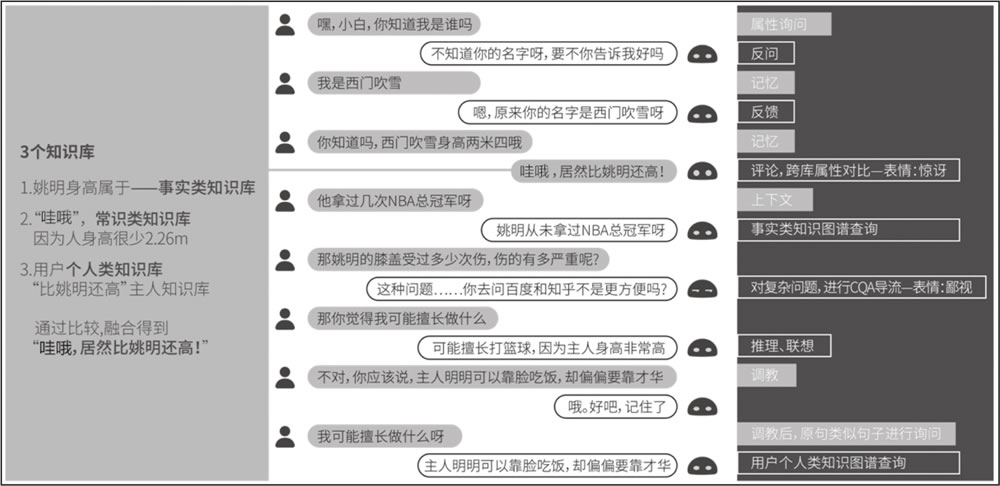
图 12 公子小白对话示例
图 12 公子小白对话示例
知识图谱的技术架构
构建知识图谱是一个系统性工程。图 13 给出了一个典型的知识图谱构建与计算的架构。
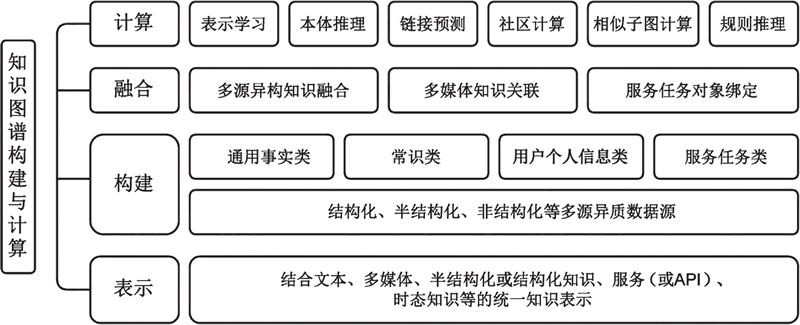
图 13 知识图谱的构建与计算
图 13 知识图谱的构建与计算
知识图谱的构建与计算，不仅需要考虑如何结合文本、多媒体、半结构化、结构化知识、服务或 API，以及时态知识等的统一知识表示，还需要进一步考虑如何结合结构化（如关系型数据库）、半结构化（HTML或XML）和非结构化（文本、图像等）多源异质数据源来分别构建通用事实类（各种领域相关实体知识）、常识类、用户个人记忆类和服务任务类知识库等。
针对不同类型的数据和知识，有不同的构建技术，如针对结构化数据的知识映射、针对半结构化知识的包装器（Wrapper），以及针对非结构化知识的文本挖掘和自然语言处理。文本挖掘充分利用 Web 和大规模语料库的冗余信息来发现隐含的模式；而自然语言处理更多是在开放或者确定的 Schema 下做各种知识抽取。
为了得到融合的图谱，我们除了需要考虑离线的多源异构的知识融合，还需要额外考虑服务任务类动态知识的对象绑定。这项工作往往是在线完成的，相当于根据不同的交互，在线动态扩充知识图谱并实例化的过程。
最后还需要考虑知识图谱的存储。既然有了知识，就必须用一定的手段去存储。但这里谈到的存储，不仅仅是建立一个知识库，还包括存储之后的应用效率等。
传统型关系数据库，例如 MySQL，以及一些 NoSQL 数据库，例如 MongoDB，能不能存储 KG 呢？答案是肯定的，但从直观上说，考虑到知识是互联、庞大的，且联系是数据的本质所在，而传统型数据库对于数据联系的表现比较差，所以在知识图谱的存储上，关系型数据库没有图数据库灵活。尤其是涉及多跳关联查询时（例如姚明的妻子的国籍是什么），图数据库的效率会远比关系型数据库高。
关注公众号「站长严长生」，在手机上阅读所有教程，随时随地都能学习。内含一款搜索神器，免费下载全网书籍和视频。

微信扫码关注公众号